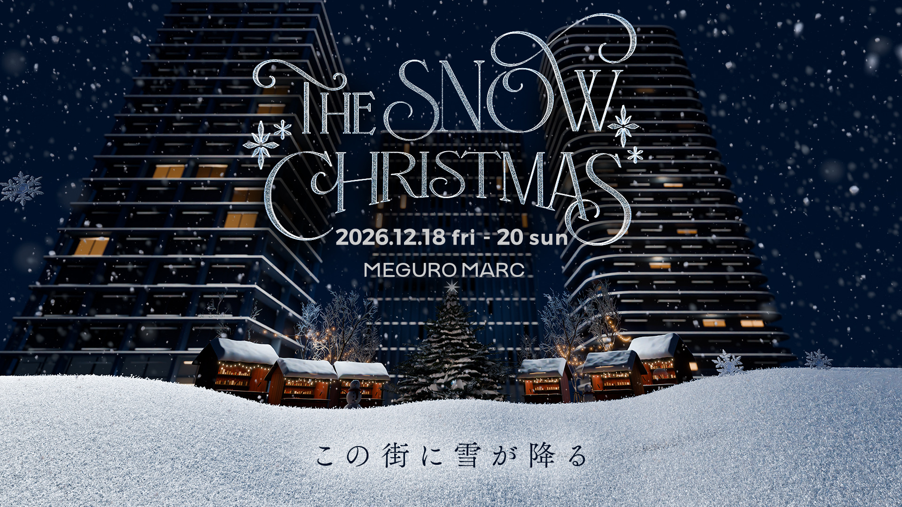

01
雪で、思いっきり遊ぶ。
Play Snow Park｜雪の広場
MEGURO MARC の夕陽公園に、本物の雪の広場ができます。さわって、ころがって、雪だるまをつくる。ソリやスコップは会場で無料で貸し出すので、手ぶらで来ても、そのまま遊べます。
雪募金で、雪の広場を広げる 1口1万円で、雪およそ100kg。集まった分だけ、この街に雪がつもります。 →
12.19SAT–12.20SUN
OPEN時間は11月上旬にお知らせします
PLACEMEGURO MARC（品川区西五反田3-3-2）入場無料
東京では最近、雪の降る日が少なくなりました。
これは世界的な話で、これから先はもっと少なくなっていくそうです。
そんな中、この2日間は、
みんなの知っているこのまちで雪のお祭りをします。
さわって、ころがって、つくって、
からだをつかって、雪を感じましょう。
そして、雪のある冬をこれからも残したいと思えるような、
すてきな思い出をつくりましょう。
会場でおまちしています。
How to enjoy
01
Play Snow Park｜雪の広場
MEGURO MARC の夕陽公園に、本物の雪の広場ができます。さわって、ころがって、雪だるまをつくる。ソリやスコップは会場で無料で貸し出すので、手ぶらで来ても、そのまま遊べます。
雪募金で、雪の広場を広げる 1口1万円で、雪およそ100kg。集まった分だけ、この街に雪がつもります。 →
02
Talk Show｜トークショー
ミラノ・コルティナ五輪のスノーボードで金メダルを獲った木村葵来選手が、MEGURO MARC に帰ってきます。雪の中で育ったこと、好きなことを続けてきたこと。子どもたちからの質問に答える時間もつくります。

03
Christmas Market & Kitchen Car｜マーケット＆キッチンカー
ガーデンに、まちのお店が並ぶ冬の市が開きます。お店を出すのは、MEGURO MARC にゆかりのある人や、このまちで商いをする人たち。外からもすてきなお店とキッチンカーがたくさん来ます。温かい食べものと飲みものを片手に、冬の贈りものを探しに。
出店者・キッチンカーを見る →
04
Coffee Stand MARC｜カフェ
雪で遊んで冷えた手には、温かいコーヒーとココアをどうぞ。Coffee Stand MARC で、THE SNOW CHRISTMAS だけの冬の限定ドリンクを用意します。寒い日でも、ここに来ればほっと温まれます。


05
Art Workshop & Exhibition｜アートワークショップと展示
館内のスタジオに外部のアーティストを招き、雪と冬をテーマに、子どもも大人も同じテーブルで手を動かします。描いた絵は、ホールに作品として飾ります。クリスマスキャンドルのワークショップも開きます。
Venue Map
会場図はイメージです。配置は変わることがあります。
写真：Pexels（Polesie Toys）／THE SNOW CHRISTMAS 2025／Unsplash（Darya Min・Katya Azimova）／MEGURO MARC ART WORKSHOP（Nachara・2025.03）／MEGURO MARC HALL での展示。一部の写真はイメージです。
Save the date
カレンダーに入れて、あとは当日、来るだけ。
Organizer & Sponsors
主催THE SNOW CHRISTMAS 実行委員会
この雪は、まちの企業と、みなさんの雪募金で降っています。

Venue
目黒・五反田・不動前、3つの駅のあいだにある MEGURO MARC。500戸の住まいと、平日約3,000人が行き交うオフィスが、ひとつの中庭を囲んでいます。働く人、暮らす人、訪れる人が自然とすれちがう、このまちの広場です。
写真：MEGURO MARC
FAQ
入場は無料です。マーケット・キッチンカー・カフェでのお買いものは、各店でお支払いください。
ソリやスコップなどのおもちゃは無料で貸し出します。手ぶらで遊べます。雪で濡れるので、手袋と着替えがあると安心です。
12月19日（土）・20日（日）の2日間です。開いている時間は、11月上旬にこのページでお知らせします。
12月10日（木）から26日（土）まで、MEGURO MARC の中央に立っています。夜は灯りがともります。
開催の判断と、当日のお知らせの方法は、11月上旬に「お知らせ」でお伝えします。


 出店者・キッチンカー
出店者・キッチンカー 雪募金
雪募金 お知らせ
お知らせ